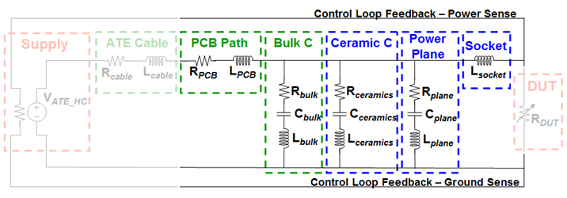

Layout considerations for UHC4 / UHC4T
Even an optimized capacitor network will not show the intended results, unless you support it by additional layout considerations.
For example:
- PCB path routing
- Bulk and ceramic capacitor placement
- Power plane solution
- Advanced socket design
Any of these, if poorly designed, can degrade the overall performance.

Functional changes
- Introduced in SmarTest 7.2.1